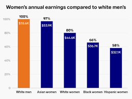

Discrimination
The Wage Gap
The gender wage gap is the difference in earnings between men and women. The World Economic Forum predicts that it will take another 217 years before the gender pay gap finally closes.
 5 Reasons the gender wage gap existsReasons for the wage gap
- Discrimination. Gender bias is still very much alive whether people are conscious of it or not.
- “Only 19% of civilian workers had access to paid family leave through their employers and only 40% had access to short-term disability insurance benefits to deal with their own medical needs” This leads to men having more years of experience.
- Industries that are predominately women such as childcare, education etc. tend to pay lower wages than industries dominated by men including trading, construction, etc.
- Even though men and women are recorded to be performing the same, men are receiving more bonuses.
- Having children, in most cases, causes mothers to work less making it more difficult for them to advance in their careers.
Researchers for the University of Exeter found that gender bias still exists due to managers and corporate leaders who believe gender bias is no longer a problem. The study involved managers within the veterinary field. A group of managers were given 2 identical candidates one female one male for a specific position. Their findings included:
- Rating the male candidate more competent
- Suggesting an 8% higher salary to the male candidate
- Majority of the managers who deemed the female candidate less competent also said they did NOT believe gender bias still existed
- 2/3 of managers who said gender bias is not an issue were male
Sexual Harassment
- 60% of women experience abuse or harassment
- 6 in 10 women do not file against their abuser
- Women working in restaurants experience harassment 90% of the time.
- Victims of abusers are 6 times more likely to change professions.
- 31% of all victims felt depressed and anxious after experiencing sexual harassment or assault.
- Only 1% of sexually harassed victims confronted their harassers.